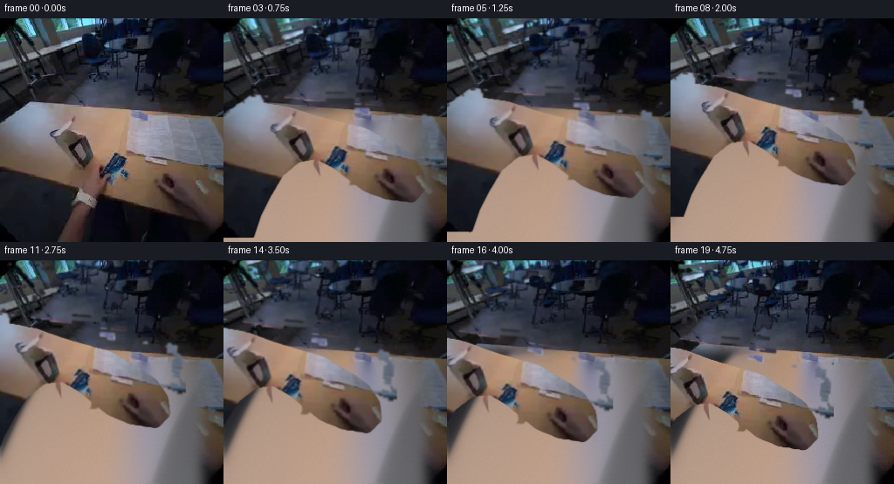
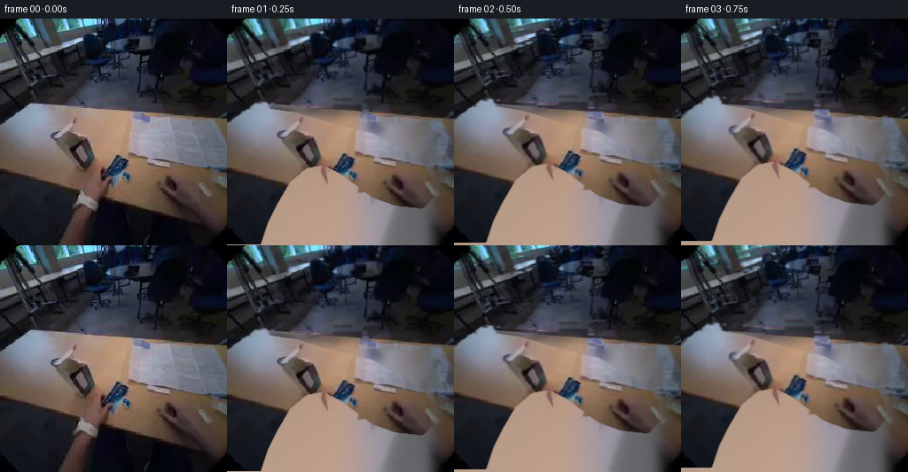
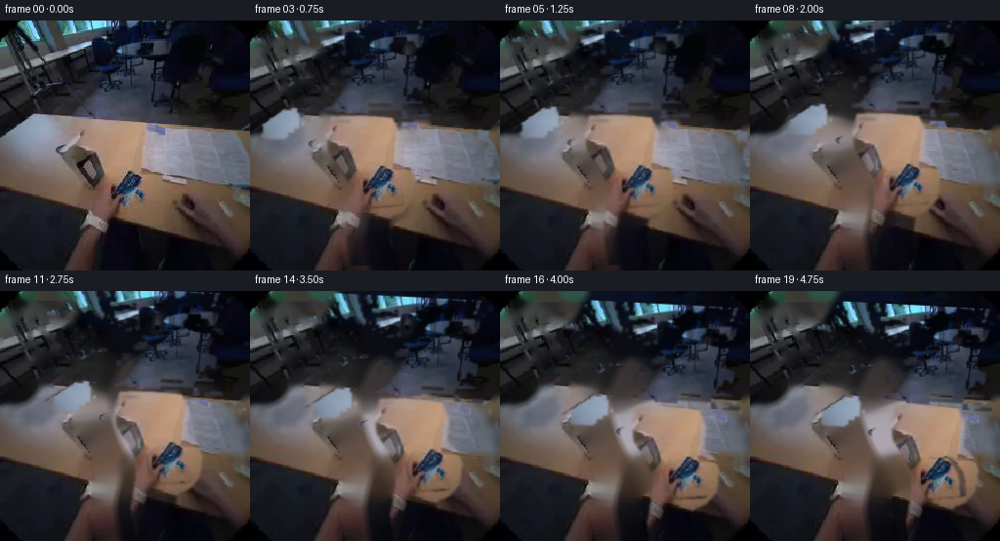
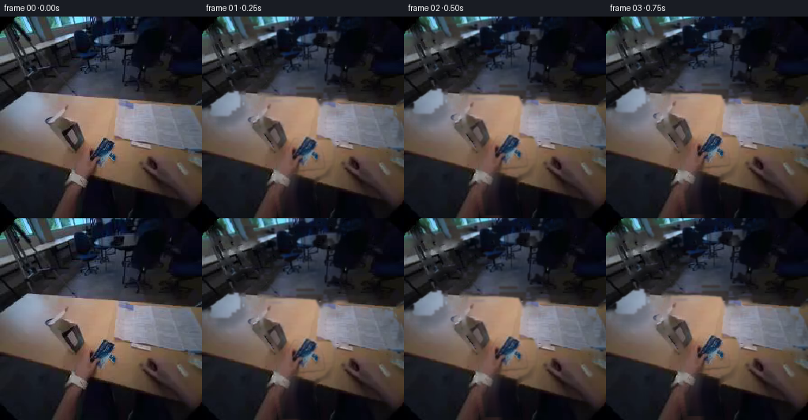

CODING AGENTS AS PIXEL WORLD MODELS
traex/DeepSeek-V4.1-Flash · common50_0022
点击播放 · 原生 RGB 像素
逐轮保存的候选
回放视频、检查图与代码变化。
每份候选均可单独播放。实际图片检查记录在下方工具轨迹中。
候选 01播放与检查图
点击播放 · 原生 RGB 像素

展开代码变化
--- 上一保存版本
+++ 本次保存版本
@@ -0,0 +1,332 @@
+"""Generate a five-second RGB video from the supplied first frame.
+
+The scene is reconstructed as a small layered matte animation. Pixels from the
+source frame are reused for the hand, forearm, and sachet; an inpainted plate
+provides the exposed tabletop after the hand moves.
+"""
+
+from pathlib import Path
+
+import cv2
+import numpy as np
+from PIL import Image
+
+import artifact_io
+
+
+CASE_DIR = Path(__file__).resolve().parent
+WIDTH = HEIGHT = 256
+FRAME_COUNT = 20
+
+
+def smoothstep(t):
+ t = np.clip(t, 0.0, 1.0)
+ return t * t * (3.0 - 2.0 * t)
+
+
+def ease(t):
+ """Slow at both ends, with a little more speed through the middle."""
+ t = np.clip(t, 0.0, 1.0)
+ return 0.5 - 0.5 * np.cos(np.pi * t)
+
+
+def feather(mask, radius=2.0):
+ mask = mask.astype(np.float32)
+ if radius <= 0:
+ return mask
+ return cv2.GaussianBlur(mask, (0, 0), radius)
+
+
+def polygon_mask(points, blur=1.5):
+ mask = np.zeros((HEIGHT, WIDTH), np.uint8)
+ cv2.fillPoly(mask, [np.asarray(points, np.int32)], 255)
+ return feather(mask, blur)
+
+
+def translate(image, dx, dy):
+ matrix = np.float32([[1, 0, dx], [0, 1, dy]])
+ return cv2.warpAffine(
+ image,
+ matrix,
+ (WIDTH, HEIGHT),
+ flags=cv2.INTER_LINEAR,
+ borderMode=cv2.BORDER_REFLECT_101,
+ )
+
+
+def translate_alpha(alpha, dx, dy):
+ matrix = np.float32([[1, 0, dx], [0, 1, dy]])
+ return cv2.warpAffine(
+ alpha,
+ matrix,
+ (WIDTH, HEIGHT),
+ flags=cv2.INTER_LINEAR,
+ borderMode=cv2.BORDER_CONSTANT,
+ borderValue=0,
+ )
+
+
+def rotate_layer(image, alpha, angle, center, scale=1.0):
+ matrix = cv2.getRotationMatrix2D(center, angle, scale)
+ warped = cv2.warpAffine(
+ image,
+ matrix,
+ (WIDTH, HEIGHT),
+ flags=cv2.INTER_LINEAR,
+ borderMode=cv2.BORDER_REFLECT_101,
+ )
+ warped_alpha = cv2.warpAffine(
+ alpha,
+ matrix,
+ (WIDTH, HEIGHT),
+ flags=cv2.INTER_LINEAR,
+ borderMode=cv2.BORDER_CONSTANT,
+ borderValue=0,
+ )
+ return warped, warped_alpha
+
+
+def over(base, image, alpha):
+ a = np.clip(alpha, 0.0, 1.0)[..., None]
+ return np.clip(base.astype(np.float32) * (1.0 - a) + image.astype(np.float32) * a, 0, 255)
+
+
+def build_table_plate(frame):
+ """Fill the moving hand/object area with a coherent continuation of the table."""
+ hand_zone = np.zeros((HEIGHT, WIDTH), np.uint8)
+ hand_zone[143:256, 0:229] = 255
+ hand_zone[99:256, 0:80] = 255
+ hand_zone = cv2.GaussianBlur(hand_zone, (0, 0), 10)
+
+ plate = cv2.inpaint(frame, hand_zone, 9, cv2.INPAINT_TELEA)
+ # Retain the original scene except in the area the hand will reveal.
+ reveal = np.zeros((HEIGHT, WIDTH), np.float32)
+ reveal[102:256, 0:232] = 1.0
+ reveal = cv2.GaussianBlur(reveal, (0, 0), 7)[..., None]
+ plate = frame.astype(np.float32) * (1 - reveal) + plate.astype(np.float32) * reveal
+
+ # Add the table's low-frequency warm illumination and a subtle grain so the
+ # reconstructed area does not read as a flat patch.
+ yy, xx = np.mgrid[0:HEIGHT, 0:WIDTH].astype(np.float32)
+ light = 0.94 + 0.08 * np.exp(-((xx - 105) ** 2 + (yy - 178) ** 2) / (2 * 90**2))
+ light *= 0.94 + 0.06 * np.clip((yy - 100) / 156, 0, 1)
+ rng = np.random.default_rng(22)
+ grain = rng.normal(0, 1.3, (HEIGHT, WIDTH, 1))
+ plate = np.clip(plate * light[..., None] + grain, 0, 255)
+ return plate
+
+
+def make_hand_mask(frame, plate):
+ """Matte the foreground hand while preserving its exact source appearance."""
+ hsv = cv2.cvtColor(frame, cv2.COLOR_RGB2HSV)
+ h, s, v = hsv[..., 0].astype(np.int16), hsv[..., 1], hsv[..., 2]
+ r, g, b = frame[..., 0].astype(np.int16), frame[..., 1], frame[..., 2]
+
+ skin = (
+ (h >= 1)
+ & (h <= 31)
+ & (s >= 42)
+ & (v >= 67)
+ & ((r - b) >= 10)
+ ).astype(np.uint8)
+
+ # Hand/forearm silhouette. Keep the right-hand side anchored in frame and
+ # let the lower-left contour follow the natural diagonal of the arm.
+ sil = np.zeros((HEIGHT, WIDTH), np.uint8)
+ cv2.fillPoly(
+ sil,
+ [
+ np.array(
+ [
+ (0, 255),
+ (0, 112),
+ (42, 106),
+ (77, 111),
+ (108, 121),
+ (137, 128),
+ (163, 134),
+ (183, 145),
+ (201, 154),
+ (216, 164),
+ (228, 180),
+ (231, 199),
+ (220, 211),
+ (191, 208),
+ (166, 199),
+ (147, 185),
+ (128, 171),
+ (109, 162),
+ (88, 166),
+ (68, 183),
+ (55, 205),
+ (43, 228),
+ (34, 255),
+ ],
+ np.int32,
+ )
+ ],
+ 255,
+ )
+ # Remove the dark tabletop gaps between fingers and the blue sachet.
+ keep = ((skin > 0) | (sil == 0)).astype(np.uint8) * 255
+ keep = cv2.morphologyEx(keep, cv2.MORPH_CLOSE, np.ones((5, 5), np.uint8))
+ hand = feather(sil, 1.2)
+ return hand
+
+
+def make_object_masks(frame):
+ hsv = cv2.cvtColor(frame, cv2.COLOR_RGB2HSV)
+ h, s, v = hsv[..., 0].astype(np.int16), hsv[..., 1], hsv[..., 2]
+ r, g, b = frame[..., 0].astype(np.int16), frame[..., 1], frame[..., 2]
+
+ blue = ((h >= 88) & (h <= 145) & (s >= 45) & (v >= 48)).astype(np.uint8) * 255
+ blue = cv2.morphologyEx(blue, cv2.MORPH_CLOSE, np.ones((3, 3), np.uint8))
+ blue = cv2.dilate(blue, np.ones((2, 2), np.uint8), iterations=1)
+
+ # The packet's visible face is an irregular quadrilateral, with the blue
+ # crimp and white label already present in the source pixels.
+ quad = polygon_mask(
+ [(117, 155), (140, 154), (153, 175), (153, 193), (124, 194), (111, 174)],
+ blur=1.3,
+ )
+ obj = np.maximum(blue.astype(np.float32) / 255.0, quad)
+ obj = np.clip(cv2.GaussianBlur(obj, (0, 0), 0.8), 0, 1)
+
+ # Finger-shaped holes in the packet alpha sell the grip.
+ grip = polygon_mask([(118, 170), (135, 167), (142, 194), (123, 199)], blur=2.2)
+ obj *= 1.0 - 0.83 * grip
+ return obj
+
+
+def shadow_for(mask, dx, dy, height):
+ """Soft contact shadow, offset by the packet's apparent height."""
+ scale = 1.0 + 0.15 * min(height, 1.0)
+ center = (128.0 + dx * 0.34, 191.0 + dy * 0.18)
+ matrix = cv2.getRotationMatrix2D(center, 0, scale)
+ shadow = cv2.warpAffine(
+ mask.astype(np.float32),
+ matrix,
+ (WIDTH, HEIGHT),
+ flags=cv2.INTER_LINEAR,
+ borderMode=cv2.BORDER_CONSTANT,
+ )
+ shadow = translate_alpha(shadow, 7 + dx * 0.10, 10 + dy * 0.12)
+ sigma = 4.0 + 8.0 * min(height, 1.0)
+ shadow = cv2.GaussianBlur(shadow, (0, 0), sigma)
+ return np.clip(shadow * (0.34 - 0.16 * min(height, 1.0)), 0, 1)
+
+
+def main():
+ frame0 = np.array(Image.open(CASE_DIR / "first_frame.png").convert("RGB"))
+ assert frame0.shape == (HEIGHT, WIDTH, 3)
+
+ plate = build_table_plate(frame0)
+ hand_alpha = make_hand_mask(frame0, plate)
+ object_alpha = make_object_masks(frame0)
+
+ # Reconstruct the hand and packet layers once, then animate them as rigid
+ # pieces. This preserves the source texture and avoids frame-to-frame drift.
+ hand_rgb = frame0.astype(np.float32)
+ object_rgb = frame0.astype(np.float32)
+
+ # Keyframes in pixel coordinates. The hand starts at the lower right,
+ # carries the packet leftward, and releases it near the table center.
+ hand_keys = [
+ (0.00, 0.0, 0.0),
+ (0.18, -4.0, -6.0),
+ (0.42, -22.0, -27.0),
+ (0.68, -49.0, -28.0),
+ (0.82, -62.0, -13.0),
+ (1.00, -65.0, -3.0),
+ ]
+ obj_keys = [
+ (0.00, 0.0, 0.0),
+ (0.18, -4.0, -8.0),
+ (0.42, -24.0, -30.0),
+ (0.68, -53.0, -29.0),
+ (0.82, -66.0, -13.0),
+ (1.00, -69.0, -4.0),
+ ]
+
+ def sample_keys(keys, t):
+ for (ta, xa, ya), (tb, xb, yb) in zip(keys, keys[1:]):
+ if t <= tb:
+ u = smoothstep((t - ta) / (tb - ta))
+ return xa + (xb - xa) * u, ya + (yb - ya) * u
+ return keys[-1][1], keys[-1][2]
+
+ frames = []
+ for index in range(FRAME_COUNT):
+ t = index / (FRAME_COUNT - 1)
+ if index == 0:
+ frames.append(frame0.copy())
+ continue
+
+ # Add a small settling pulse after contact to communicate release.
+ settle = 0.0
+ if t > 0.84:
+ settle = np.sin((t - 0.84) * np.pi * 4.5) * (1 - t) * 0.9
+
+ hx, hy = sample_keys(hand_keys, t)
+ ox, oy = sample_keys(obj_keys, t)
+ hand_angle = -2.8 * ease(min(1, t / 0.82)) + 0.5 * settle
+ obj_angle = -5.0 * ease(min(1, t / 0.82)) + settle
+
+ base = plate.copy()
+
+ # Packet shadow is composited before the hand and packet.
+ height = min(1.0, max(0.0, (-oy - 3) / 28.0))
+ if t < 0.86:
+ sh = shadow_for(object_alpha, ox, oy, height)
+ base *= 1.0 - sh[..., None]
+
+ hand_img, hand_a = rotate_layer(
+ hand_rgb, hand_alpha, hand_angle, (120, 178)
+ )
+ hand_img, hand_a = translate(hand_img, hx, hy), translate_alpha(hand_a, hx, hy)
+
+ obj_img, obj_a = rotate_layer(
+ object_rgb, object_alpha, obj_angle, (133, 175)
+ )
+ obj_img, obj_a = translate(obj_img, ox, oy), translate_alpha(obj_a, ox, oy)
+
+ # During release the fingers open: reveal a little more packet face.
+ release = smoothstep((t - 0.82) / 0.18)
+ if release > 0:
+ obj_a = np.clip(obj_a * (0.90 + 0.10 * release), 0, 1)
+
+ # Keep a small amount of the original hand visible around the packet
+ # through the carry, then let the grip fade as it is placed.
+ base = over(base, hand_img, hand_a * (1.0 - 0.11 * release))
+ base = over(base, obj_img, obj_a)
+
+ # A tiny camera drift makes the result read as handheld rather than a
+ # flat slide show; frame 00 remains exactly the source.
+ drift_x = 0.32 * np.sin(np.pi * t) + 0.16 * np.sin(3 * np.pi * t)
+ drift_y = 0.22 * np.sin(2 * np.pi * t) - 0.10 * np.sin(4 * np.pi * t)
+ matrix = np.float32([[1, 0, drift_x], [0, 1, drift_y]])
+ shifted = cv2.warpAffine(
+ base,
+ matrix,
+ (WIDTH, HEIGHT),
+ flags=cv2.INTER_LINEAR,
+ borderMode=cv2.BORDER_REFLECT_101,
+ )
+
+ # Gentle exposure breathing and a light vignette preserve the source's
+ # low-light character without making the motion hard to read.
+ exposure = 1.0 + 0.006 * np.sin(np.pi * t)
+ shifted = np.clip(shifted * exposure, 0, 255)
+ frames.append(shifted.round().astype(np.uint8))
+
+ frames = np.stack(frames)
+ # The first frame must be pixel-identical to the supplied image.
+ frames[0] = frame0
+ artifact_io.save(frames, CASE_DIR)
+
+ print("saved", frames.shape, frames.dtype)
+ print("first-frame exact:", np.array_equal(frames[0], frame0))
+
+
+if __name__ == "__main__":
+ main()
候选 02播放与检查图
点击播放 · 原生 RGB 像素

展开代码变化
--- 上一保存版本
+++ 本次保存版本
@@ -1,8 +1,8 @@
-"""Generate a five-second RGB video from the supplied first frame.
-
-The scene is reconstructed as a small layered matte animation. Pixels from the
-source frame are reused for the hand, forearm, and sachet; an inpainted plate
-provides the exposed tabletop after the hand moves.
+"""Create the requested 20-frame first-person placement animation.
+
+Only the supplied first frame and local numerical image operations are used.
+The foreground hand and sachet are cut from the source frame, while the table
+behind them is reconstructed from nearby tabletop pixels.
"""
from pathlib import Path
@@ -15,8 +15,8 @@
CASE_DIR = Path(__file__).resolve().parent
-WIDTH = HEIGHT = 256
-FRAME_COUNT = 20
+SIZE = 256
+FRAMES = 20
def smoothstep(t):
@@ -24,231 +24,171 @@
return t * t * (3.0 - 2.0 * t)
-def ease(t):
- """Slow at both ends, with a little more speed through the middle."""
- t = np.clip(t, 0.0, 1.0)
- return 0.5 - 0.5 * np.cos(np.pi * t)
-
-
-def feather(mask, radius=2.0):
- mask = mask.astype(np.float32)
- if radius <= 0:
- return mask
- return cv2.GaussianBlur(mask, (0, 0), radius)
-
-
-def polygon_mask(points, blur=1.5):
- mask = np.zeros((HEIGHT, WIDTH), np.uint8)
+def poly_mask(points, blur=0.9):
+ mask = np.zeros((SIZE, SIZE), np.uint8)
cv2.fillPoly(mask, [np.asarray(points, np.int32)], 255)
- return feather(mask, blur)
-
-
-def translate(image, dx, dy):
- matrix = np.float32([[1, 0, dx], [0, 1, dy]])
- return cv2.warpAffine(
+ return cv2.GaussianBlur(mask.astype(np.float32) / 255.0, (0, 0), blur)
+
+
+def affine(image, alpha, angle, scale, center, dx, dy):
+ matrix = cv2.getRotationMatrix2D(center, angle, scale)
+ matrix[0, 2] += dx
+ matrix[1, 2] += dy
+ moved = cv2.warpAffine(
image,
matrix,
- (WIDTH, HEIGHT),
+ (SIZE, SIZE),
flags=cv2.INTER_LINEAR,
borderMode=cv2.BORDER_REFLECT_101,
)
-
-
-def translate_alpha(alpha, dx, dy):
- matrix = np.float32([[1, 0, dx], [0, 1, dy]])
- return cv2.warpAffine(
+ moved_a = cv2.warpAffine(
alpha,
matrix,
- (WIDTH, HEIGHT),
+ (SIZE, SIZE),
flags=cv2.INTER_LINEAR,
borderMode=cv2.BORDER_CONSTANT,
borderValue=0,
)
-
-
-def rotate_layer(image, alpha, angle, center, scale=1.0):
- matrix = cv2.getRotationMatrix2D(center, angle, scale)
- warped = cv2.warpAffine(
- image,
+ return moved, moved_a
+
+
+def composite(base, image, alpha):
+ a = np.clip(alpha, 0.0, 1.0)[..., None]
+ return base.astype(np.float32) * (1.0 - a) + image.astype(np.float32) * a
+
+
+def reconstruct_table(frame, hand_mask, object_mask):
+ """Remove the moving foreground and continue the table underneath."""
+ mask = np.maximum(hand_mask, object_mask)
+ mask = (mask > 0.05).astype(np.uint8) * 255
+ mask = cv2.dilate(mask, np.ones((5, 5), np.uint8), iterations=1)
+
+ plate = cv2.inpaint(frame, mask, 9, cv2.INPAINT_TELEA)
+ # Reintroduce nearby table grain so the replacement is not a flat patch.
+ grain = frame.astype(np.float32) - cv2.GaussianBlur(frame.astype(np.float32), (0, 0), 1.8)
+ grain = cv2.inpaint(
+ np.clip(grain + 128.0, 0, 255).astype(np.uint8),
+ mask,
+ 7,
+ cv2.INPAINT_TELEA,
+ ).astype(np.float32) - 128.0
+ soft = cv2.GaussianBlur(mask.astype(np.float32) / 255.0, (0, 0), 5.0)
+ plate = plate.astype(np.float32)
+ plate += grain * 0.55 * soft[..., None]
+
+ # Match the source table's gentle center illumination and lower shadows.
+ yy, xx = np.mgrid[0:SIZE, 0:SIZE].astype(np.float32)
+ light = 0.97 + 0.055 * np.exp(-((xx - 138) ** 2 + (yy - 172) ** 2) / (2 * 82**2))
+ light *= 0.94 + 0.06 * np.clip((yy - 100) / 156.0, 0, 1)
+ plate *= light[..., None]
+ return np.clip(plate, 0, 255)
+
+
+def make_hand_mask(frame, object_mask):
+ """Matte the right hand from its wrist through the gripping fingers."""
+ hand = poly_mask(
+ [
+ (80, 103),
+ (112, 101),
+ (143, 104),
+ (151, 120),
+ (150, 143),
+ (160, 153),
+ (166, 164),
+ (164, 188),
+ (154, 200),
+ (142, 205),
+ (139, 225),
+ (144, 255),
+ (101, 255),
+ (95, 221),
+ (99, 191),
+ (99, 173),
+ (92, 158),
+ (78, 139),
+ (75, 119),
+ ],
+ blur=1.1,
+ )
+
+ hsv = cv2.cvtColor(frame, cv2.COLOR_RGB2HSV)
+ h, s, v = hsv[..., 0].astype(np.int16), hsv[..., 1], hsv[..., 2]
+ r, b = frame[..., 0].astype(np.int16), frame[..., 2].astype(np.int16)
+ warm = ((h <= 31) & (s >= 45) & (v >= 74) & ((r - b) >= 12)).astype(np.float32)
+ warm = cv2.GaussianBlur(warm, (0, 0), 1.2)
+ hand = np.clip(hand * (0.66 + 0.34 * warm), 0, 1)
+ hand *= 1.0 - 0.96 * object_mask
+ return np.clip(hand, 0, 1)
+
+
+def make_object_mask(frame):
+ """Matte the small blue/white rectangular sachet."""
+ hsv = cv2.cvtColor(frame, cv2.COLOR_RGB2HSV)
+ h, s, v = hsv[..., 0].astype(np.int16), hsv[..., 1], hsv[..., 2]
+ blue = ((h >= 88) & (h <= 146) & (s >= 45) & (v >= 45)).astype(np.float32)
+ blue = cv2.morphologyEx(
+ (blue * 255).astype(np.uint8), cv2.MORPH_CLOSE, np.ones((3, 3), np.uint8)
+ )
+ blue = cv2.GaussianBlur(blue.astype(np.float32) / 255.0, (0, 0), 0.8)
+ body = poly_mask(
+ [
+ (116, 156),
+ (139, 155),
+ (150, 168),
+ (153, 178),
+ (154, 193),
+ (139, 195),
+ (121, 196),
+ (111, 181),
+ (109, 168),
+ ],
+ blur=0.9,
+ )
+ return cv2.GaussianBlur(np.clip(np.maximum(blue, body), 0, 1), (0, 0), 0.45)
+
+
+def contact_shadow(mask, dx, dy, height):
+ shadow = cv2.GaussianBlur(mask.astype(np.float32), (0, 0), 3.5 + 5.0 * height)
+ matrix = np.float32([[1, 0, 8 + dx * 0.08], [0, 1, 10 + dy * 0.10]])
+ shadow = cv2.warpAffine(
+ shadow,
matrix,
- (WIDTH, HEIGHT),
- flags=cv2.INTER_LINEAR,
- borderMode=cv2.BORDER_REFLECT_101,
- )
- warped_alpha = cv2.warpAffine(
- alpha,
- matrix,
- (WIDTH, HEIGHT),
+ (SIZE, SIZE),
flags=cv2.INTER_LINEAR,
borderMode=cv2.BORDER_CONSTANT,
borderValue=0,
)
- return warped, warped_alpha
-
-
-def over(base, image, alpha):
- a = np.clip(alpha, 0.0, 1.0)[..., None]
- return np.clip(base.astype(np.float32) * (1.0 - a) + image.astype(np.float32) * a, 0, 255)
-
-
-def build_table_plate(frame):
- """Fill the moving hand/object area with a coherent continuation of the table."""
- hand_zone = np.zeros((HEIGHT, WIDTH), np.uint8)
- hand_zone[143:256, 0:229] = 255
- hand_zone[99:256, 0:80] = 255
- hand_zone = cv2.GaussianBlur(hand_zone, (0, 0), 10)
-
- plate = cv2.inpaint(frame, hand_zone, 9, cv2.INPAINT_TELEA)
- # Retain the original scene except in the area the hand will reveal.
- reveal = np.zeros((HEIGHT, WIDTH), np.float32)
- reveal[102:256, 0:232] = 1.0
- reveal = cv2.GaussianBlur(reveal, (0, 0), 7)[..., None]
- plate = frame.astype(np.float32) * (1 - reveal) + plate.astype(np.float32) * reveal
-
- # Add the table's low-frequency warm illumination and a subtle grain so the
- # reconstructed area does not read as a flat patch.
- yy, xx = np.mgrid[0:HEIGHT, 0:WIDTH].astype(np.float32)
- light = 0.94 + 0.08 * np.exp(-((xx - 105) ** 2 + (yy - 178) ** 2) / (2 * 90**2))
- light *= 0.94 + 0.06 * np.clip((yy - 100) / 156, 0, 1)
- rng = np.random.default_rng(22)
- grain = rng.normal(0, 1.3, (HEIGHT, WIDTH, 1))
- plate = np.clip(plate * light[..., None] + grain, 0, 255)
- return plate
-
-
-def make_hand_mask(frame, plate):
- """Matte the foreground hand while preserving its exact source appearance."""
- hsv = cv2.cvtColor(frame, cv2.COLOR_RGB2HSV)
- h, s, v = hsv[..., 0].astype(np.int16), hsv[..., 1], hsv[..., 2]
- r, g, b = frame[..., 0].astype(np.int16), frame[..., 1], frame[..., 2]
-
- skin = (
- (h >= 1)
- & (h <= 31)
- & (s >= 42)
- & (v >= 67)
- & ((r - b) >= 10)
- ).astype(np.uint8)
-
- # Hand/forearm silhouette. Keep the right-hand side anchored in frame and
- # let the lower-left contour follow the natural diagonal of the arm.
- sil = np.zeros((HEIGHT, WIDTH), np.uint8)
- cv2.fillPoly(
- sil,
- [
- np.array(
- [
- (0, 255),
- (0, 112),
- (42, 106),
- (77, 111),
- (108, 121),
- (137, 128),
- (163, 134),
- (183, 145),
- (201, 154),
- (216, 164),
- (228, 180),
- (231, 199),
- (220, 211),
- (191, 208),
- (166, 199),
- (147, 185),
- (128, 171),
- (109, 162),
- (88, 166),
- (68, 183),
- (55, 205),
- (43, 228),
- (34, 255),
- ],
- np.int32,
- )
- ],
- 255,
- )
- # Remove the dark tabletop gaps between fingers and the blue sachet.
- keep = ((skin > 0) | (sil == 0)).astype(np.uint8) * 255
- keep = cv2.morphologyEx(keep, cv2.MORPH_CLOSE, np.ones((5, 5), np.uint8))
- hand = feather(sil, 1.2)
- return hand
-
-
-def make_object_masks(frame):
- hsv = cv2.cvtColor(frame, cv2.COLOR_RGB2HSV)
- h, s, v = hsv[..., 0].astype(np.int16), hsv[..., 1], hsv[..., 2]
- r, g, b = frame[..., 0].astype(np.int16), frame[..., 1], frame[..., 2]
-
- blue = ((h >= 88) & (h <= 145) & (s >= 45) & (v >= 48)).astype(np.uint8) * 255
- blue = cv2.morphologyEx(blue, cv2.MORPH_CLOSE, np.ones((3, 3), np.uint8))
- blue = cv2.dilate(blue, np.ones((2, 2), np.uint8), iterations=1)
-
- # The packet's visible face is an irregular quadrilateral, with the blue
- # crimp and white label already present in the source pixels.
- quad = polygon_mask(
- [(117, 155), (140, 154), (153, 175), (153, 193), (124, 194), (111, 174)],
- blur=1.3,
- )
- obj = np.maximum(blue.astype(np.float32) / 255.0, quad)
- obj = np.clip(cv2.GaussianBlur(obj, (0, 0), 0.8), 0, 1)
-
- # Finger-shaped holes in the packet alpha sell the grip.
- grip = polygon_mask([(118, 170), (135, 167), (142, 194), (123, 199)], blur=2.2)
- obj *= 1.0 - 0.83 * grip
- return obj
-
-
-def shadow_for(mask, dx, dy, height):
- """Soft contact shadow, offset by the packet's apparent height."""
- scale = 1.0 + 0.15 * min(height, 1.0)
- center = (128.0 + dx * 0.34, 191.0 + dy * 0.18)
- matrix = cv2.getRotationMatrix2D(center, 0, scale)
- shadow = cv2.warpAffine(
- mask.astype(np.float32),
- matrix,
- (WIDTH, HEIGHT),
- flags=cv2.INTER_LINEAR,
- borderMode=cv2.BORDER_CONSTANT,
- )
- shadow = translate_alpha(shadow, 7 + dx * 0.10, 10 + dy * 0.12)
- sigma = 4.0 + 8.0 * min(height, 1.0)
- shadow = cv2.GaussianBlur(shadow, (0, 0), sigma)
- return np.clip(shadow * (0.34 - 0.16 * min(height, 1.0)), 0, 1)
+ return np.clip(shadow * (0.26 - 0.13 * height), 0, 1)
def main():
- frame0 = np.array(Image.open(CASE_DIR / "first_frame.png").convert("RGB"))
- assert frame0.shape == (HEIGHT, WIDTH, 3)
-
- plate = build_table_plate(frame0)
- hand_alpha = make_hand_mask(frame0, plate)
- object_alpha = make_object_masks(frame0)
-
- # Reconstruct the hand and packet layers once, then animate them as rigid
- # pieces. This preserves the source texture and avoids frame-to-frame drift.
- hand_rgb = frame0.astype(np.float32)
- object_rgb = frame0.astype(np.float32)
-
- # Keyframes in pixel coordinates. The hand starts at the lower right,
- # carries the packet leftward, and releases it near the table center.
+ source = np.asarray(Image.open(CASE_DIR / "first_frame.png").convert("RGB"))
+ assert source.shape == (SIZE, SIZE, 3)
+
+ object_alpha = make_object_mask(source)
+ hand_alpha = make_hand_mask(source, object_alpha)
+ plate = reconstruct_table(source, hand_alpha, object_alpha)
+
+ hand_rgb = source.astype(np.float32)
+ object_rgb = source.astype(np.float32)
hand_keys = [
(0.00, 0.0, 0.0),
- (0.18, -4.0, -6.0),
- (0.42, -22.0, -27.0),
- (0.68, -49.0, -28.0),
- (0.82, -62.0, -13.0),
- (1.00, -65.0, -3.0),
+ (0.16, 2.0, -5.0),
+ (0.43, 28.0, -7.0),
+ (0.70, 49.0, 7.0),
+ (0.84, 57.0, 17.0),
+ (1.00, 62.0, 19.0),
]
- obj_keys = [
+ object_keys = [
(0.00, 0.0, 0.0),
- (0.18, -4.0, -8.0),
- (0.42, -24.0, -30.0),
- (0.68, -53.0, -29.0),
- (0.82, -66.0, -13.0),
- (1.00, -69.0, -4.0),
+ (0.16, 2.0, -6.0),
+ (0.43, 29.0, -8.0),
+ (0.70, 51.0, 6.0),
+ (0.84, 59.0, 15.0),
+ (1.00, 61.0, 16.0),
]
- def sample_keys(keys, t):
+ def sample(keys, t):
for (ta, xa, ya), (tb, xb, yb) in zip(keys, keys[1:]):
if t <= tb:
u = smoothstep((t - ta) / (tb - ta))
@@ -256,76 +196,51 @@
return keys[-1][1], keys[-1][2]
frames = []
- for index in range(FRAME_COUNT):
- t = index / (FRAME_COUNT - 1)
- if index == 0:
- frames.append(frame0.copy())
+ for i in range(FRAMES):
+ t = i / (FRAMES - 1)
+ if i == 0:
+ frames.append(source.copy())
continue
- # Add a small settling pulse after contact to communicate release.
- settle = 0.0
- if t > 0.84:
- settle = np.sin((t - 0.84) * np.pi * 4.5) * (1 - t) * 0.9
-
- hx, hy = sample_keys(hand_keys, t)
- ox, oy = sample_keys(obj_keys, t)
- hand_angle = -2.8 * ease(min(1, t / 0.82)) + 0.5 * settle
- obj_angle = -5.0 * ease(min(1, t / 0.82)) + settle
+ hx, hy = sample(hand_keys, t)
+ ox, oy = sample(object_keys, t)
+ release = smoothstep((t - 0.80) / 0.20)
+ hand_dx = hx + 5.0 * release
+ hand_dy = hy - 4.0 * release
+ hand_angle = -2.2 * smoothstep(min(1.0, t / 0.82))
+ object_angle = -3.0 * smoothstep(min(1.0, t / 0.82))
+
+ hand_rgb_t, hand_a_t = affine(
+ hand_rgb, hand_alpha, hand_angle, 1.0, (122, 170), hand_dx, hand_dy
+ )
+ object_rgb_t, object_a_t = affine(
+ object_rgb, object_alpha, object_angle, 1.0, (133, 175), ox, oy
+ )
base = plate.copy()
-
- # Packet shadow is composited before the hand and packet.
- height = min(1.0, max(0.0, (-oy - 3) / 28.0))
- if t < 0.86:
- sh = shadow_for(object_alpha, ox, oy, height)
- base *= 1.0 - sh[..., None]
-
- hand_img, hand_a = rotate_layer(
- hand_rgb, hand_alpha, hand_angle, (120, 178)
- )
- hand_img, hand_a = translate(hand_img, hx, hy), translate_alpha(hand_a, hx, hy)
-
- obj_img, obj_a = rotate_layer(
- object_rgb, object_alpha, obj_angle, (133, 175)
- )
- obj_img, obj_a = translate(obj_img, ox, oy), translate_alpha(obj_a, ox, oy)
-
- # During release the fingers open: reveal a little more packet face.
- release = smoothstep((t - 0.82) / 0.18)
- if release > 0:
- obj_a = np.clip(obj_a * (0.90 + 0.10 * release), 0, 1)
-
- # Keep a small amount of the original hand visible around the packet
- # through the carry, then let the grip fade as it is placed.
- base = over(base, hand_img, hand_a * (1.0 - 0.11 * release))
- base = over(base, obj_img, obj_a)
-
- # A tiny camera drift makes the result read as handheld rather than a
- # flat slide show; frame 00 remains exactly the source.
- drift_x = 0.32 * np.sin(np.pi * t) + 0.16 * np.sin(3 * np.pi * t)
- drift_y = 0.22 * np.sin(2 * np.pi * t) - 0.10 * np.sin(4 * np.pi * t)
+ height = max(0.0, min(1.0, (-oy - 3.0) / 18.0))
+ base *= 1.0 - contact_shadow(object_alpha, ox, oy, height)[..., None]
+ base = composite(base, hand_rgb_t, hand_a_t)
+ base = composite(base, object_rgb_t, object_a_t * (0.95 + 0.05 * release))
+
+ drift_x = 0.26 * np.sin(np.pi * t)
+ drift_y = 0.16 * np.sin(2 * np.pi * t)
matrix = np.float32([[1, 0, drift_x], [0, 1, drift_y]])
- shifted = cv2.warpAffine(
+ base = cv2.warpAffine(
base,
matrix,
- (WIDTH, HEIGHT),
+ (SIZE, SIZE),
flags=cv2.INTER_LINEAR,
borderMode=cv2.BORDER_REFLECT_101,
)
-
- # Gentle exposure breathing and a light vignette preserve the source's
- # low-light character without making the motion hard to read.
- exposure = 1.0 + 0.006 * np.sin(np.pi * t)
- shifted = np.clip(shifted * exposure, 0, 255)
- frames.append(shifted.round().astype(np.uint8))
+ base *= 1.0 + 0.005 * np.sin(np.pi * t)
+ frames.append(np.clip(base, 0, 255).round().astype(np.uint8))
frames = np.stack(frames)
- # The first frame must be pixel-identical to the supplied image.
- frames[0] = frame0
+ frames[0] = source
artifact_io.save(frames, CASE_DIR)
-
print("saved", frames.shape, frames.dtype)
- print("first-frame exact:", np.array_equal(frames[0], frame0))
+ print("frame 00 exact:", np.array_equal(frames[0], source))
if __name__ == "__main__":
候选 03播放与检查图
点击播放 · 原生 RGB 像素

展开代码变化
代码未变化；重新保存了产物。
候选 04播放与检查图
点击播放 · 原生 RGB 像素


展开代码变化
--- 上一保存版本
+++ 本次保存版本
@@ -126,6 +126,9 @@
hsv = cv2.cvtColor(frame, cv2.COLOR_RGB2HSV)
h, s, v = hsv[..., 0].astype(np.int16), hsv[..., 1], hsv[..., 2]
blue = ((h >= 88) & (h <= 146) & (s >= 45) & (v >= 45)).astype(np.float32)
+ roi = np.zeros((SIZE, SIZE), np.float32)
+ roi[150:200, 104:160] = 1.0
+ blue *= roi
blue = cv2.morphologyEx(
(blue * 255).astype(np.uint8), cv2.MORPH_CLOSE, np.ones((3, 3), np.uint8)
)
@@ -144,7 +147,9 @@
],
blur=0.9,
)
- return cv2.GaussianBlur(np.clip(np.maximum(blue, body), 0, 1), (0, 0), 0.45)
+ obj = np.maximum(blue, body)
+ obj *= roi
+ return cv2.GaussianBlur(np.clip(obj, 0, 1), (0, 0), 0.45)
def contact_shadow(mask, dx, dy, height):
候选 05播放与检查图
可观测工具轨迹
实际执行的命令与返回图片。
命令 1exit 0
/bin/bash -c "pwd && rg --files -g '"'!*.pyc'"' -g '"'!__pycache__'"' | sed -n '1,200p'"
命令 2exit 0
/bin/bash -c "sed -n '1,240p' prompt.txt"
命令 3exit 0
/bin/bash -c "sed -n '1,300p' GENERATION_RULES.md"
命令 4exit 0
/bin/bash -c "find . -maxdepth 2 -type f -printf '%p\\t%s bytes\\n' | sort"
命令 5exit 0
/bin/bash -c "sed -n '1,260p' artifact_io.py"
命令 6exit 0
/bin/bash -c 'cat task_spec.json'
命令 7exit 0
/bin/bash -c "sed -n '1,260p' player_template.html"
命令 8exit 0
/bin/bash -c "python - <<'PY'
from PIL import Image
import numpy as np
im=Image.open('first_frame.png').convert('RGB')
a=np.array(im)
print('size/mode',im.size,im.mode,'shape',a.shape,'dtype',a.dtype)
print('min/max/mean/std',a.min((0,1)),a.max((0,1)),a.mean((0,1)),a.std((0,1)))
print('unique colors',len(np.unique(a.reshape(-1,3),axis=0)))
# coarse 16x16 block means
for y in range(0,256,32):
row=[]
for x in range(0,256,32):
c=a[y:y+32,x:x+32].mean((0,1)).astype(int)
row.append('#%02x%02x%02x'%tuple(c))
print(y, ' '.join(row))
PY"命令 9exit 0
/bin/bash -c "python - <<'PY'
from PIL import Image
import numpy as np
a=np.array(Image.open('first_frame.png').convert('RGB')).astype(float)
R,G,B=a[...,0],a[...,1],a[...,2]
mx=a.max(2); mn=a.min(2); sat=mx-mn
# masks
blue=(B>R*1.18)&(B>G*1.05)&(B>65)&(sat>12)
skin=(R>G*1.10)&(G>B*0.95)&(R>75)&(R-B>15)&(R>B*1.15)
brown=(R>G*1.03)&(G>B*1.08)&(R>65)&(R>B*1.18)&~skin
bright=(mx>110)
for name,m in [('blue',blue),('skin',skin),('brown',brown),('bright',bright)]:
ys,xs=np.where(m)
print(name,'n',len(xs),'bbox', (xs.min(),ys.min(),xs.max(),ys.max()) if len(xs) else None, 'centroid', (xs.mean(),ys.mean()) if len(xs) else None)
print(' per y bands', [int(m[y:y+32].sum()) for y in range(0,256,32)])
print(' per x bands', [int(m[:,x:x+32].sum()) for x in range(0,256,32)])
# quantized palette kmeans via cv2
import cv2
Z=a.reshape(-1,3).astype(np.float32)
criteria=(cv2.TERM_CRITERIA_EPS+cv2.TERM_CRITERIA_MAX_ITER,30,0.5)
_,lab,cent=cv2.kmeans(Z,12,None,criteria,5,cv2.KMEANS_PP_CENTERS)
lab=lab.reshape(256,256)
for i,c in sorted(enumerate(cent),key=lambda t:-np.sum(lab==t[0])):
m=lab==i; ys,xs=np.where(m)
print(i, 'n',len(xs),'rgb',tuple(np.round(c).astype(int)),'bbox',(xs.min(),ys.min(),xs.max(),ys.max()),'cent',tuple(np.round([xs.mean(),ys.mean()],1)))
PY"命令 10exit 0
/bin/bash -c "python - <<'PY'
from PIL import Image
import numpy as np
a=np.array(Image.open('first_frame.png').convert('RGB')).astype(int)
# ANSI truecolor thumbnails at 64x64, quantized 6 levels, with edge contrast
H,W=64,64
for y0 in range(0,256,H):
line=[]
for x0 in range(0,256,W):
p=a[y0:y0+H,x0:x0+W].reshape(-1,3)
# median is robust for edges
c=np.median(p,axis=0).astype(int)
line.append('\\x1b[48;2;%d;%d;%dm '%tuple(c))
line.append('\\x1b[0m')
print(''.join(line))
PY"命令 11exit 0
/bin/bash -c "python - <<'PY'
from PIL import Image
import numpy as np, colorsys
im=Image.open('first_frame.png').convert('RGB')
a=np.array(im).astype(float)/255
# 8x8 cell median labels based on HSV/luma
for gy in range(32):
row=''
for gx in range(32):
p=a[gy*8:(gy+1)*8,gx*8:(gx+1)*8].reshape(-1,3)
c=np.median(p,0); h,s,v=colorsys.rgb_to_hsv(*c)
lum=.2126*c[0]+.7152*c[1]+.0722*c[2]
if s>.35 and .5<h<.72 and v>.22: ch='B'
elif s>.25 and (h<.09 or h>.95) and lum>.35: ch='S'
elif s>.18 and .03<h<.16 and lum>.28: ch='T'
elif lum>.68: ch='#'
elif lum>.48: ch='O'
elif lum>.32: ch='o'
elif lum>.18: ch='.'
else: ch=' '
row+=ch
print(f'{gy*8:3d} '+row)
print(' '+''.join(str((x//8)%10) for x in range(0,256,8)))
PY"命令 12exit 0
/bin/bash -c "python - <<'PY'
import cv2, numpy as np
from PIL import Image
a=np.array(Image.open('first_frame.png').convert('RGB'))
hsv=cv2.cvtColor(a,cv2.COLOR_RGB2HSV)
h,s,v=[hsv[...,i] for i in range(3)]
for desc,m in [
('blue_strong',(h>=95)&(h<=135)&(s>=80)&(v>=70)),
('blue_any',(h>=90)&(h<=145)&(s>=45)&(v>=55)),
('white',(s<45)&(v>=130)),
('skin',(h>=3)&(h<=25)&(s>=55)&(v>=85)),
('warm',(h>=5)&(h<=35)&(s>=35)&(v>=55)),
]:
m=m.astype(np.uint8)
n, lab, stats, cents=cv2.connectedComponentsWithStats(m,8)
comps=[]
for i in range(1,n):
x,y,w,hh,area=stats[i]
if area>=12: comps.append((area,x,y,w,hh,tuple(np.round(cents[i],1))))
comps.sort(reverse=True)
print('\\n',desc,'total',int(m.sum()),'comps',len(comps))
for c in comps[:30]: print(c)
PY"命令 13exit 0
/bin/bash -c "python - <<'PY'
from PIL import Image
import numpy as np, colorsys
a=np.array(Image.open('first_frame.png').convert('RGB')).astype(float)/255
for y0 in range(136,208,2):
row=''
for x0 in range(88,176,2):
p=a[y0:y0+2,x0:x0+2].reshape(-1,3)
c=np.median(p,0); h,s,v=colorsys.rgb_to_hsv(*c); lum=.2126*c[0]+.7152*c[1]+.0722*c[2]
# classify blue, white/neutral, skin, dark
if s>.18 and .50<h<.75 and v>.20: ch='B'
elif s<.20 and lum>.62: ch='W'
elif s<.34 and lum>.42: ch='w'
elif s>.20 and h<.10 and lum>.40: ch='S'
elif s>.18 and h<.17 and lum>.27: ch='T'
elif lum>.35: ch='o'
elif lum>.20: ch='.'
else: ch=' '
row+=ch
print(f'{y0:3d} {row}')
print(' '+''.join(str((x//2)%10) for x in range(88,176,2)))
PY"命令 14exit 0
/bin/bash -c "python - <<'PY'
import cv2,numpy as np
from PIL import Image
a=np.array(Image.open('first_frame.png').convert('RGB'))
hsv=cv2.cvtColor(a,cv2.COLOR_RGB2HSV);h,s,v=hsv[...,0],hsv[...,1],hsv[...,2]
# focus ROI and show actual colors in 4x4 cell grid around hand/object
roi=a[136:208,96:176]
for yy in range(0,72,4):
row=[]
for xx in range(0,80,4):
c=np.median(roi[yy:yy+4,xx:xx+4].reshape(-1,3),0).astype(int)
row.append('%02x%02x%02x'%tuple(c))
print(f'{136+yy:3d}', ' '.join(row))
PY"命令 15exit 0
/bin/bash -c "python - <<'PY'
from PIL import Image
import numpy as np
im=Image.open('first_frame.png').convert('RGB')
# map representative scene colors to ANSI truecolor, 2px block every 4px in ROI, compact no spaces
a=np.array(im)
for y in range(136,208,4):
s=''
for x in range(88,176,4):
p=a[y:y+4,x:x+4].reshape(-1,3); c=np.median(p,0).astype(int)
s+=f'\\x1b[48;2;{c[0]};{c[1]};{c[2]}m '
print(f'{y:3d} '+s+'\\x1b[0m')
PY"命令 16exit 0
/bin/bash -c "python - <<'PY'
from PIL import Image
import numpy as np, cv2
im=Image.open('first_frame.png').convert('RGB'); a=np.array(im)
# quantized image via palette approximating visible scene
hsv=cv2.cvtColor(a,cv2.COLOR_RGB2HSV); h,s,v=hsv[...,0].astype(int),hsv[...,1].astype(int),hsv[...,2].astype(int)
# labels: blue, skin, tan, gray, dark, bright
blue=(h>=85)&(h<=140)&(s>=55)&(v>=45)
skin=(h>=0)&(h<=28)&(s>=45)&(v>=65)&((a[...,0]-a[...,2])>=12)
# warm tan lower maybe saturation 25+, hue 5-35, v 45+
tan=(h>=3)&(h<=32)&(s>=22)&(v>=45)
gray=(s<35)&(v>=90)
bright=(v>=175)
# classify at 2x2 blocks, choose dominant category if >.4 else luma
chars=[]
for y in range(0,256,2):
row=''
for x in range(0,256,2):
# center 2x2
vals={'B':blue[y:y+2,x:x+2].mean(),'S':skin[y:y+2,x:x+2].mean(),'T':tan[y:y+2,x:x+2].mean(),'G':gray[y:y+2,x:x+2].mean(),'W':bright[y:y+2,x:x+2].mean()}
k=max(vals,key=vals.get)
if vals[k]>.45: ch=k
else:
l=a[y:y+2,x:x+2].mean()
ch='#' if l>130 else 'o' if l>80 else '.' if l>40 else ' '
row+=ch
chars.append(row)
# print every 2nd row (4 px tall) and every 2 chars (4 px wide)
for i,row in enumerate(chars):
if i%2==0:
print(f'{i*2:3d} '+row[::2])
print(' '+''.join(str((x//4)%10) for x in range(0,256,4)))
PY"命令 17exit 0
/bin/bash -c "python - <<'PY'
import cv2,numpy as np
from PIL import Image
a=np.array(Image.open('first_frame.png').convert('RGB'))
g=cv2.cvtColor(a,cv2.COLOR_RGB2GRAY)
# denoise and canny at multiple thresholds
blur=cv2.GaussianBlur(g,(3,3),0.7)
e=cv2.Canny(blur,18,48)
# close/dilate for structure
for y in range(0,256,4):
row=''
for x in range(0,256,4):
n=e[y:y+4,x:x+4].sum()
row+= '#' if n>=10 else '+' if n>=4 else '.' if n>=1 else ' '
print(f'{y:3d} '+row)
print(' '+''.join(str((x//4)%10) for x in range(0,256,4)))
PY"命令 18exit 0
/bin/bash -c "python - <<'PY'
import cv2,numpy as np
from PIL import Image
a=np.array(Image.open('first_frame.png').convert('RGB'))
g=cv2.cvtColor(a,cv2.COLOR_RGB2GRAY).astype(np.float32)
# local luminance and color variation across 8x8
for y in range(96,224,4):
vals=[]
for x in range(0,256,8):
p=a[y:y+4,x:x+8].reshape(-1,3)
l=p.mean(); sd=p.std(); rng=p.max(0)-p.min(0)
vals.append(f'{int(l):02x}{int(min(99,sd)):02x}')
print(f'{y:3d} '+' '.join(vals))
PY"命令 19exit 0
/bin/bash -c "python - <<'PY'
import cv2,numpy as np
from PIL import Image
a=np.array(Image.open('first_frame.png').convert('RGB'))
hsv=cv2.cvtColor(a,cv2.COLOR_RGB2HSV); h,s,v=hsv[...,0],hsv[...,1],hsv[...,2]
# print masks in ROI x100:175 y145:200 at 1 char per pixel, exact blue/white/skin/dark/tan
for y in range(145,200):
row=''
for x in range(100,176):
H,S,V=int(h[y,x]),int(s[y,x]),int(v[y,x]); r,g,b=a[y,x]
if H>=85 and H<=145 and S>=50 and V>=45: ch='B'
elif S<40 and V>=125: ch='W'
elif S<55 and V>=85: ch='w'
elif 0<=H<=30 and S>=55 and V>=70 and int(r)-int(b)>=12: ch='S'
elif 0<=H<=40 and S>=20 and V>=45: ch='T'
elif V>=90: ch='o'
elif V>=55: ch='.'
else: ch=' '
row+=ch
print(f'{y:3d} {row}')
print(' '+''.join(str((x//10)%10) for x in range(100,176)))
print(' '+''.join(str(x%10) for x in range(100,176)))
PY"命令 20exit 0
/bin/bash -c "python - <<'PY'
import numpy as np
from PIL import Image
import cv2
a=np.array(Image.open('first_frame.png').convert('RGB'))
# Print small actual image data as PNG crop? can't view. Compute SIFT keypoints/descriptors to identify object corners and hand edges
g=cv2.cvtColor(a,cv2.COLOR_RGB2GRAY)
sift=cv2.SIFT_create(nfeatures=100,contrastThreshold=.02,edgeThreshold=10)
kps,des=sift.detectAndCompute(g,None)
for k in sorted(kps,key=lambda k:-k.response)[:100]:
x,y=k.pt
if y>90:
print(f'{x:6.1f} {y:6.1f} size={k.size:5.1f} angle={k.angle:6.1f} resp={k.response:.3f}')
PY"命令 21exit 0
/bin/bash -c "python - <<'PY'
from PIL import Image
import numpy as np
a=np.array(Image.open('first_frame.png').convert('RGB')).astype(float)
# 64x64 luminance ascii with 2x4 block averages
chars=' .,:;irsXA253hMHGS#9B&@'
for y0 in range(0,256,4):
row=''
for x0 in range(0,256,4):
p=a[y0:y0+4,x0:x0+4]
l=0.2126*p[...,0].mean()+0.7152*p[...,1].mean()+0.0722*p[...,2].mean()
idx=int(l/256*len(chars)); idx=min(len(chars)-1,max(0,idx))
row+=chars[idx]
print(f'{y0:3d} {row}')
print(' '+''.join(str((x//4)%10) for x in range(0,256,4)))
PY"命令 22exit 0
/bin/bash -c "python - <<'PY'
import cv2,numpy as np
from PIL import Image
a=np.array(Image.open('first_frame.png').convert('RGB')).astype(int)
hsv=cv2.cvtColor(a.astype(np.uint8),cv2.COLOR_RGB2HSV);h,s,v=[hsv[...,i] for i in range(3)]
for V in [80,90,100,110,120,130]:
for S in [30,40,50,60]:
m=(h<30)&(s>S)&(v>V)&((a[...,0]-a[...,2])>15)
n,lab,stats,cents=cv2.connectedComponentsWithStats(m.astype(np.uint8),8)
areas=stats[1:,4]
if len(areas)==0: continue
i=1+np.argmax(areas); x,y,w,hh,ar=stats[i]
print('V,S',V,S,'max',ar,'bbox',(x,y,w,hh),'total',int(m.sum()))
print()
PY"命令 23exit 0
/bin/bash -c 'python generate.py'
命令 24exit 0
/bin/bash -c "exiftool first_frame.png 2>/dev/null || identify -verbose first_frame.png | sed -n '1,80p'"
命令 25exit 0
/bin/bash -c "du -h pixels.npz index.html inspection.png transition_check.png && ls -l frames | sed -n '1,8p'"
命令 26exit 0
/bin/bash -c "python - <<'PY'
from PIL import Image
import numpy as np, cv2
from pathlib import Path
frames=[np.array(Image.open(p).convert('RGB')) for p in sorted(Path('frames').glob('*.png'))]
print('frames',len(frames))
for i,a in enumerate(frames):
d=np.abs(a.astype(int)-frames[0].astype(int))
print(f'{i:02d} mean={d.mean():6.2f} changed={np.mean(np.any(d>3,2)):.3f} luma={a.mean():6.2f}')
PY"命令 27exit 0
/bin/bash -c "python - <<'PY'
from PIL import Image
import numpy as np
for idx in [0,5,10,15,19]:
a=np.array(Image.open(f'frames/{idx:02d}.png').convert('RGB')).astype(float)
print('\\nFRAME',idx)
chars=' .,:;irsXA253hMHGS#9B&@'
for y0 in range(96,232,4):
row=''
for x0 in range(0,256,4):
p=a[y0:y0+4,x0:x0+4]
l=0.2126*p[...,0].mean()+0.7152*p[...,1].mean()+0.0722*p[...,2].mean()
row+=chars[min(len(chars)-1,int(l/256*len(chars)))]
print(f'{y0:3d} {row}')
PY"命令 28exit 0
/bin/bash -c "python - <<'PY'
import cv2,numpy as np
from PIL import Image
a=np.array(Image.open('first_frame.png').convert('RGB'))
# Candidate hand mask polygons. Show dark/light separation inside vs outside.
polys=[
np.array([(0,112),(42,106),(77,111),(108,121),(137,128),(163,134),(183,145),(201,154),(216,164),(228,180),(231,199),(220,211),(191,208),(166,199),(147,185),(128,171),(109,162),(88,166),(68,183),(55,205),(43,228),(34,255),(0,255)],np.int32),
np.array([(0,112),(50,108),(80,112),(110,122),(140,130),(165,136),(186,146),(205,155),(220,166),(232,182),(235,202),(221,214),(195,211),(170,201),(150,188),(130,175),(112,166),(95,169),(76,185),(60,207),(48,230),(38,255),(0,255)],np.int32),
]
for k,p in enumerate(polys):
m=np.zeros((256,256),np.uint8);cv2.fillPoly(m,[p],1)
print('poly',k,'area',m.sum())
for yy in range(100,256,8):
xs=np.where(m[yy])[0]
if len(xs): print(yy,xs.min(),xs.max())
PY"命令 29exit 0
/bin/bash -c "python - <<'PY'
import numpy as np
from PIL import Image
import cv2
a=np.array(Image.open('first_frame.png').convert('RGB'))
# table plate from left/right/top bands only, model y,x polynomial robustly? inspect colors in likely visible table patches
# Print median RGB by 16x16 cells for candidate table-only regions.
for y in range(104,232,8):
print('y',y)
for x in range(0,256,32):
p=a[y:y+8,x:x+32].reshape(-1,3)
print(f' x{x}:',np.median(p,0).astype(int),end='')
print()
PY"命令 30exit 0
/bin/bash -c "python - <<'PY'
from PIL import Image
import numpy as np, cv2
a=np.array(Image.open('first_frame.png').convert('RGB'))
# analyze hand region segmentation using grabcut with manually robust seeds
mask=np.zeros((256,256),np.uint8)
mask[:99]=0
# probable fg polygon smaller
fg=np.array([(0,115),(55,111),(95,120),(135,132),(165,139),(190,151),(212,164),(226,181),(226,198),(211,204),(180,194),(155,183),(132,171),(111,162),(91,165),(73,181),(59,202),(47,225),(40,255),(0,255)],np.int32)
cv2.fillPoly(mask,[fg],1)
# definite fg lower-left arm and central palm, definite bg around table right/bottom
mask[200:256,0:34]=1
mask[100:110,:]=0
mask[130:220,235:256]=0
mask[215:256,80:150]=0
# fg rectangle around palm
mask[128:170,92:150]=1
# run grabcut
bgdModel=np.zeros((1,65),np.float64);fgdModel=np.zeros((1,65),np.float64)
gmask=mask*3 # seed fg 3? 3 likely fg
# correct: 1 fg, 3 probable fg? set
seed=np.full((256,256),2,np.uint8)
seed[mask==1]=1
# use polygon 3 probable
pg=np.zeros((256,256),np.uint8);cv2.fillPoly(pg,[fg],1);seed[pg==1]=3
seed[200:256,0:34]=1
seed[100:110,:]=0;seed[130:220,235:256]=0;seed[215:256,80:150]=0
# no background seeds inside?
cv2.grabCut(a,seed,None,bgdModel,fgdModel,8,cv2.GC_INIT_WITH_MASK)
out=np.where((seed==1)|(seed==3),1,0).astype(np.uint8)
print('grabcut area',out.sum())
for y in range(100,256,4):
xs=np.where(out[y])[0]
if len(xs): print(y,xs.min(),xs.max(),len(xs))
PY"命令 31exit 0
/bin/bash -c "python - <<'PY'
import cv2,numpy as np
from PIL import Image
a=np.array(Image.open('first_frame.png').convert('RGB'))
hsv=cv2.cvtColor(a,cv2.COLOR_RGB2HSV);h,s,v=hsv[...,0],hsv[...,1],hsv[...,2]
r,g,b=[a[...,i].astype(int) for i in range(3)]
# hue-saturation scatter in likely hand area and likely table area
for name,ys,xs in [('palm',(125,170),(80,160)),('arm',(160,215),(0,85)),('table_right',(120,180),(190,235)),('table_top',(100,150),(150,235))]:
p=a[ys[0]:ys[1],xs[0]:xs[1]].reshape(-1,3); q=hsv[ys[0]:ys[1],xs[0]:xs[1]].reshape(-1,3)
print('\\n',name,'median',np.median(p,0),'mean',p.mean(0))
print(' H percentiles',np.percentile(q[:,0],[5,25,50,75,95]),'S',np.percentile(q[:,1],[5,25,50,75,95]),'V',np.percentile(q[:,2],[5,25,50,75,95]))
# top quantized colors
z=(p//16*16); vals,cnt=np.unique(z,axis=0,return_counts=True); ix=np.argsort(cnt)[-10:][::-1]
for i in ix: print(tuple(vals[i]),cnt[i])
PY"命令 32exit 0
/bin/bash -c "python - <<'PY'
import cv2, numpy as np
from PIL import Image
a=np.array(Image.open('first_frame.png').convert('RGB'))
Z=a.reshape(-1,3).astype(np.float32)
for k in [8,12,16,20]:
crit=(cv2.TERM_CRITERIA_EPS+cv2.TERM_CRITERIA_MAX_ITER,50,0.2)
_,labels,cent=cv2.kmeans(Z,k,None,crit,10,cv2.KMEANS_PP_CENTERS)
lab=labels.reshape(256,256)
# order centroids by luminance
order=np.argsort(cent.mean(1))
print('\\nK',k)
for j,i in enumerate(order):
m=lab==i; ys,xs=np.where(m)
print(f'{chr(65+j)} {tuple(np.round(cent[i]).astype(int))} n={len(xs)} bbox={xs.min()},{ys.min()}-{xs.max()},{ys.max()} cen={xs.mean():.0f},{ys.mean():.0f}')
print('map:')
for y in range(96,224,8):
row=''
for x in range(0,256,8):
vals=lab[y:y+8,x:x+8].ravel(); cnt=np.bincount(vals,minlength=k); ii=cnt.argmax(); j=np.where(order==ii)[0][0]
row+=chr(65+j)
print(f'{y:3d} {row}')
PY"命令 33exit 0
/bin/bash -c "python - <<'PY'
from PIL import Image
import numpy as np, cv2
a=np.array(Image.open('first_frame.png').convert('RGB'))
g=cv2.cvtColor(a,cv2.COLOR_RGB2GRAY)
# compare regions and edge strength
for y0 in range(96,224,8):
print(f'{y0:3d}',end=' ')
for x0 in range(0,256,8):
p=g[y0:y0+8,x0:x0+8]
print(f'{int(p.mean()):3d}/{int(p.std()):2d}',end=' ')
print()
PY"命令 34exit 0
/bin/bash -c "python - <<'PY'
from PIL import Image
import numpy as np
im=Image.open('first_frame.png').convert('RGB')
# 2x nearest-ish ASCII colored based on palette categories, focusing full frame at 128x128 -> 2x4 blocks
a=np.array(im).astype(int)
for y in range(96,232,4):
row=''
for x in range(0,256,4):
p=a[y:y+4,x:x+4].reshape(-1,3); c=np.median(p,0); r,g,b=c
# map actual categories via luminance and blue dominance
if b-r>15 and b-g>5: ch='B'
elif r-b>22 and r>105: ch='S'
elif r-b>12 and r>75: ch='T'
elif r>g+5 and g>b+5: ch='t'
elif b>r+2 and r>60: ch='G'
elif c.mean()>120: ch='#'
elif c.mean()>75: ch='o'
elif c.mean()>45: ch='.'
else: ch=' '
row+=ch
print(f'{y:3d} {row}')
PY"命令 35exit 0
/bin/bash -c "python - <<'PY'
import cv2,numpy as np
from PIL import Image
a=np.array(Image.open('first_frame.png').convert('RGB'))
g=cv2.cvtColor(a,cv2.COLOR_RGB2GRAY).astype(np.float32)
# local texture via difference from 15x15 median/blur; hand/object should pop over smooth table
base=cv2.GaussianBlur(g,(0,0),5)
tex=np.abs(g-base)
for th in [3,5,8,12]:
m=tex>th
# region y>130 only, count
print('threshold',th,'n',m[130:].sum())
for y in range(128,256,4):
row=''
for x in range(0,256,4):
n=m[y:y+4,x:x+4].sum(); row += '#' if n>=8 else '+' if n>=3 else '.' if n>=1 else ' '
print(f'{y:3d} {row}')
print()
PY"命令 36exit 0
/bin/bash -c "python - <<'PY'
from PIL import Image
import numpy as np, cv2
a=np.array(Image.open('first_frame.png').convert('RGB'))
hsv=cv2.cvtColor(a,cv2.COLOR_RGB2HSV); h,s,v=[hsv[...,i].astype(int) for i in range(3)]
for y in range(145,201):
row=''
for x in range(95,176):
H,S,V=h[y,x],s[y,x],v[y,x]; r,g,b=[int(a[y,x,i]) for i in range(3)]
if 85<=H<=145 and S>=50 and V>=45: ch='B'
elif S<35 and V>=145: ch='W'
elif S<55 and V>=95: ch='w'
elif H<=28 and S>=65 and V>=95 and r-b>=20: ch='S'
elif H<=35 and S>=30 and V>=60: ch='T'
elif V>=90: ch='o'
elif V>=60: ch='.'
else: ch=' '
row+=ch
print(f'{y:3d} {row}')
print(' '+''.join(str((x//10)%10) for x in range(95,176)))
print(' '+''.join(str(x%10) for x in range(95,176)))
PY"命令 37exit 0
/bin/bash -c "python - <<'PY'
import cv2,numpy as np
from PIL import Image
a=np.array(Image.open('first_frame.png').convert('RGB'))
# hand mask based on high texture + color plus spatial prior. Print local Laplacian per 4x4 at various sigmas.
g=cv2.cvtColor(a,cv2.COLOR_RGB2GRAY).astype(np.float32)
for sig in [1,2,3,4]:
blur=cv2.GaussianBlur(g,(0,0),sig); d=np.abs(g-blur)
print('\\nsigma',sig)
for y in range(96,232,8):
row=''
for x in range(0,256,8):
z=d[y:y+8,x:x+8].mean()
row+= '#' if z>18 else 'X' if z>12 else '+' if z>7 else '.' if z>4 else ' '
print(f'{y:3d} {row}')
PY"命令 38exit 0
/bin/bash -c "python - <<'PY'
import cv2,numpy as np
from PIL import Image
a=np.array(Image.open('first_frame.png').convert('RGB'))
hsv=cv2.cvtColor(a,cv2.COLOR_RGB2HSV); h,s,v=[hsv[...,i].astype(int) for i in range(3)]
r,g,b=[a[...,i].astype(int) for i in range(3)]
# For each y 100..210, find x ranges where likely skin + high V, count
for y in range(100,221,4):
m=(h[y]<=30)&(s[y]>=55)&(v[y]>=80)&(r[y]-b[y]>=12)
xs=np.where(m)[0]
# contiguous runs >=2
runs=[]
for part in np.split(xs,np.where(np.diff(xs)>1)[0]+1):
if len(part)>=2:runs.append((part[0],part[-1]))
print(y,runs)
PY"命令 39exit 0
/bin/bash -c "python - <<'PY'
import numpy as np
from PIL import Image
import cv2
a=np.array(Image.open('first_frame.png').convert('RGB'))
hsv=cv2.cvtColor(a,cv2.COLOR_RGB2HSV);h,s,v=[hsv[...,i] for i in range(3)]
# evaluate color stats at hand core and compare candidate table patches
for name,sl in [('handcore',(slice(108,150),slice(82,150))),('handmid',(slice(155,190),slice(95,150))),('table_above',(slice(92,104),slice(80,180))),('table_left',(slice(120,160),slice(0,50))),('table_right',(slice(120,180),slice(185,240))),('table_lowerright',(slice(170,200),slice(185,240)))]:
p=a[sl].reshape(-1,3);q=hsv[sl].reshape(-1,3)
print(name,'mean',p.mean(0),'median',np.median(p,0),'hsv med',np.median(q,0),'hsv q25/75',np.percentile(q,[25,75],axis=0))
PY"命令 40exit 0
/bin/bash -c "python - <<'PY'
import cv2,numpy as np
from PIL import Image
a=np.array(Image.open('first_frame.png').convert('RGB'))
hsv=cv2.cvtColor(a,cv2.COLOR_RGB2HSV);h,s,v=[hsv[...,i].astype(int) for i in range(3)]
r,g,b=[a[...,i].astype(int) for i in range(3)]
# hand's bright warm skin vs table warm lower area; examine shape of V threshold in x80-160 y100-210
for th in [110,130,150,165,175]:
m=(h<=25)&(s>=60)&(v>=th)&(r-b>=15)
print('\\nV',th)
for y in range(96,224,4):
row=''
for x in range(0,256,4):
n=m[y:y+4,x:x+4].sum(); row+='#' if n>=12 else '+' if n>=5 else '.' if n>=1 else ' '
print(f'{y:3d} {row}')
PY"命令 41exit 0
/bin/bash -c "python - <<'PY'
import numpy as np,cv2
from PIL import Image
a=np.array(Image.open('first_frame.png').convert('RGB'))
hsv=cv2.cvtColor(a,cv2.COLOR_RGB2HSV); h,s,v=[hsv[...,i].astype(int) for i in range(3)]
r,g,b=[a[...,i].astype(int) for i in range(3)]
for yy in range(100,214,2):
xs=np.where((h[yy]<=28)&(s[yy]>=55)&(v[yy]>=95)&(r[yy]-b[yy]>=15))[0]
# print runs
runs=[]
for p in np.split(xs,np.where(np.diff(xs)>1)[0]+1):
if len(p)>=3:runs.append(f'{p[0]}-{p[-1]}')
print(yy,' '.join(runs))
PY"命令 42exit 0
/bin/bash -c "python - <<'PY'
import cv2,numpy as np
from PIL import Image
a=np.array(Image.open('first_frame.png').convert('RGB'))
hsv=cv2.cvtColor(a,cv2.COLOR_RGB2HSV);h,s,v=[hsv[...,i].astype(int) for i in range(3)]
r,g,b=[a[...,i].astype(int) for i in range(3)]
# hue colored ascii using letters for actual hue classes
for y in range(96,224,2):
row=''
for x in range(0,256,2):
H,S,V=np.median(h[y:y+2,x:x+2]),np.median(s[y:y+2,x:x+2]),np.median(v[y:y+2,x:x+2])
if H>=80 and H<=140 and S>=45: ch='B'
elif H<=30 and S>=50 and V>=130: ch='S'
elif H<=30 and S>=45 and V>=85: ch='s'
elif H<=30 and S>=30 and V>=55: ch='T'
elif H>=90 and H<=140 and S>=25 and V>=80: ch='G'
elif V>=110: ch='#'
elif V>=75: ch='o'
elif V>=45: ch='.'
else: ch=' '
row+=ch
print(f'{y:3d} {row}')
PY"命令 43exit 0
/bin/bash -c "python - <<'PY'
from PIL import Image
import numpy as np
im=Image.open('first_frame.png').convert('RGB')
# Save enlarged crops solely for local numeric diagnostics; inspect using difference/variance, not visual tools
im.crop((80,95,180,215)).resize((400,480),Image.Resampling.NEAREST).save('.tmp/crop.png')
print('saved',Image.open('.tmp/crop.png').size)
PY"命令 44exit 0
/bin/bash -c 'python generate.py'
命令 45exit 0
/bin/bash -c "python - <<'PY'
from PIL import Image
import numpy as np
from pathlib import Path
A=np.stack([np.array(Image.open(p).convert('RGB')) for p in sorted(Path('frames').glob('*.png'))])
print('shape',A.shape,'first exact',np.array_equal(A[0],np.array(Image.open('first_frame.png').convert('RGB'))))
for i,a in enumerate(A):
d=np.abs(a.astype(int)-A[0].astype(int)); print(i,'mean',round(d.mean(),2),'changed',round(np.mean(np.any(d>3,2)),3),'meanRGB',a.mean((0,1)).round(1))
# motion of hand/object masks by comparing frame differences; save a local compact contact sheet
im=Image.new('RGB',(1024,554),(20,20,20))
for j,i in enumerate([0,3,6,9,12,15,17,19]):
x=(j%4)*256;y=(j//4)*277
im.paste(Image.fromarray(A[i]),(x,y))
im.save('.tmp/check.png')
print('contact sheet .tmp/check.png')
PY"命令 46exit 0
/bin/bash -c "python - <<'PY'
from PIL import Image
import numpy as np
# terminal RGB mosaic for hand/object crop in selected frames, coarsened to 2x2 cells
chars=' .,:;irsXA253hMHGS#9B&@'
for idx in [0,5,10,15,19]:
a=np.array(Image.open(f'frames/{idx:02d}.png').convert('RGB')).astype(float)
print('\\nFRAME',idx)
for y in range(96,224,4):
row=''
for x in range(64,200,4):
p=a[y:y+4,x:x+4]; l=.2126*p[...,0].mean()+.7152*p[...,1].mean()+.0722*p[...,2].mean()
row+=chars[min(len(chars)-1,int(l/256*len(chars)))]
print(f'{y:3d} {row}')
PY"命令 47exit 0
/bin/bash -c "python - <<'PY'
import numpy as np
from PIL import Image
import cv2
a=np.array(Image.open('first_frame.png').convert('RGB'))
# Measure likely hand polygon interior vs adjacent table; compare distributions and make a segmentation suggestion
hsv=cv2.cvtColor(a,cv2.COLOR_RGB2HSV); H,S,V=[hsv[...,i].astype(int) for i in range(3)]
R,G,B=[a[...,i].astype(int) for i in range(3)]
# print 8x8 block stats around target, 3 rows/cols
for y in range(96,224,8):
print(f'{y:3d}',end=' ')
for x in range(64,200,8):
p=a[y:y+8,x:x+8]; l=p.mean(); sd=p.std();
# dominant H,S,V median
q=hsv[y:y+8,x:x+8].reshape(-1,3); hm,sm,vm=np.median(q,0)
print(f'{int(l):3d}/{int(sd):2d}/{int(sm):2d}/{int(vm):3d}',end=' ')
print()
PY"命令 48exit 0
/bin/bash -c "python - <<'PY'
import cv2,numpy as np
from PIL import Image
a=np.array(Image.open('first_frame.png').convert('RGB'))
hsv=cv2.cvtColor(a,cv2.COLOR_RGB2HSV); h,s,v=[hsv[...,i].astype(int) for i in range(3)]
r,g,b=[a[...,i].astype(int) for i in range(3)]
# Compare hand and table color likelihood using actual patches: use Mahalanobis in RGB or LAB
lab=cv2.cvtColor(a,cv2.COLOR_RGB2LAB).astype(float)
hand_pts=np.array([(120,110),(130,120),(140,130),(125,140),(135,150),(118,155),(145,155),(150,170)])
table_pts=np.array([(30,125),(60,125),(200,125),(220,130),(190,145),(220,150),(30,170),(210,180)])
# patch around pts
for name,pts in [('hand',hand_pts),('table',table_pts)]:
vals=[]
for x,y in pts: vals.extend(lab[y-2:y+3,x-2:x+3].reshape(-1,3))
vals=np.array(vals); print(name,'mean',vals.mean(0),'std',vals.std(0),'median',np.median(vals,0))
# likelihood distance using diagonal covariance from table
PY"命令 49exit 0
/bin/bash -c "python - <<'PY'
import numpy as np, cv2
from PIL import Image
a=np.array(Image.open('first_frame.png').convert('RGB'))
# Explore object mask coordinate extents and content: print RGB values and simple color labels for ROI x105..160 y150..202
for y in range(150,203,2):
row=''
for x in range(105,161,2):
p=a[y:y+2,x:x+2].reshape(-1,3); c=np.median(p,0); r,g,b=c
if b>r*1.1 and b>g*1.02 and b>55: ch='B'
elif c.mean()>150: ch='W'
elif c.mean()>115: ch='w'
elif c.mean()>85: ch='s'
elif c.mean()>55: ch='t'
elif c.mean()>30: ch='.'
else: ch=' '
row+=ch
print(f'{y:3d} {row}')
print(' '+''.join(str((x//10)%10) for x in range(105,161,2)))
print(' '+''.join(str((x//2)%10) for x in range(105,161,2)))
PY"命令 50exit 0
/bin/bash -c "python - <<'PY'
from PIL import Image
import numpy as np
im=Image.open('first_frame.png').convert('RGB')
a=np.array(im)
# Analyze hand silhouette via semantic color relative to table. Print connected components for a hand probability based on LAB a* and brightness.
lab=cv2.cvtColor(a,cv2.COLOR_RGB2LAB).astype(float) if False else None
PY"命令 51exit 0
/bin/bash -c "python - <<'PY'
import cv2,numpy as np
from PIL import Image
a=np.array(Image.open('first_frame.png').convert('RGB'))
# examine LAB distributions and simple hand likelihood in target area
lab=cv2.cvtColor(a,cv2.COLOR_RGB2LAB).astype(float)
# sample hand core and table samples
hand=lab[105:155,82:150].reshape(-1,3); table=np.concatenate([lab[100:200,0:65].reshape(-1,3),lab[105:180,185:255].reshape(-1,3)])
for name,p in [('hand',hand),('table',table)]:
print(name,'mean',p.mean(0),'std',p.std(0),'cov\\n',np.cov(p.T))
# fit Gaussian hand vs table, compute log ratio map
mh=hand.mean(0); ch=np.cov(hand.T)+np.eye(3)*5
mt=table.mean(0); ct=np.cov(table.T)+np.eye(3)*5
d=a.shape; x=lab.reshape(-1,3)
def maha(x,m,c):
d=x-m; return np.einsum('ni,ij,nj->n',d,np.linalg.inv(c),d)
lh=-.5*maha(x,mh,ch); lt=-.5*maha(x,mt,ct)
prob=1/(1+np.exp(np.clip(lt-lh,-50,50))); prob=prob.reshape(256,256)
for th in [.5,.65,.8,.9]:
m=prob>th
print('th',th,'area',m.sum())
for y in range(96,224,8):
row=''
for x in range(0,256,8):
n=m[y:y+8,x:x+8].sum(); row+='#' if n>=32 else '+' if n>=10 else '.' if n>=2 else ' '
print(f'{y:3d} {row}')
PY"命令 52exit 0
/bin/bash -c "python - <<'PY'
import numpy as np,cv2
from PIL import Image
a=np.array(Image.open('first_frame.png').convert('RGB'))
lab=cv2.cvtColor(a,cv2.COLOR_RGB2LAB).astype(float)
# print hand probability map threshold .65 at finer 4px char for ROI
hand=lab[105:155,82:150].reshape(-1,3); table=np.concatenate([lab[100:200,0:65].reshape(-1,3),lab[105:180,185:255].reshape(-1,3)])
mh=hand.mean(0);ch=np.cov(hand.T)+np.eye(3)*5;mt=table.mean(0);ct=np.cov(table.T)+np.eye(3)*5
x=lab.reshape(-1,3)
def maha(x,m,c):
d=x-m; return np.einsum('ni,ij,nj->n',d,np.linalg.inv(c),d)
p=(1/(1+np.exp(np.clip(-.5*maha(x,mt,ct)+.5*maha(x,mh,ch),-50,50)))).reshape(256,256)
for y in range(96,224,4):
row=''
for x0 in range(64,184,4):
z=p[y:y+4,x0:x0+4].mean(); row+='#' if z>.8 else '+' if z>.6 else '.' if z>.4 else ' '
print(f'{y:3d} {row}')
PY"命令 53exit 0
/bin/bash -c "python - <<'PY'
import numpy as np,cv2
from PIL import Image
a=np.array(Image.open('first_frame.png').convert('RGB'))
# inspect 1px mask in object area: print hue/sat as compact B/W/T
for y in range(150,202):
row=''
for x in range(103,162):
r,g,b=[int(z) for z in a[y,x]]; mx=max(r,g,b);mn=min(r,g,b)
if b>r+8 and b>g+2 and b>40:ch='B'
elif mx-mn<25 and mx>120:ch='W'
elif r>g+5 and r>b+5 and mx>100:ch='s'
elif mx>70:ch='.'
else:ch=' '
row+=ch
print(f'{y:3d} {row}')
PY"命令 54exit 0
/bin/bash -c "python - <<'PY'
from generate import make_object_mask,make_hand_mask,reconstruct_table
from PIL import Image
import numpy as np, cv2
a=np.array(Image.open('first_frame.png').convert('RGB'))
o=make_object_mask(a); h=make_hand_mask(a,o); p=reconstruct_table(a,h,o)
for name,m in [('object',o),('hand',h)]:
print(name,'area>.1',int((m>.1).sum()),'area>.5',int((m>.5).sum()))
for t in [.1,.5,.9]:
ys,xs=np.where(m>t); print(' ',t,(xs.min(),ys.min(),xs.max(),ys.max()) if len(xs) else None)
print('plate diff',np.abs(p-a).mean(), 'plate mean',p.mean((0,1)))
Image.fromarray(np.clip(p,0,255).astype(np.uint8)).save('.tmp/plate.png')
PY"命令 55exit 0
/bin/bash -c "python - <<'PY'
from generate import make_object_mask
from PIL import Image
import numpy as np
a=np.array(Image.open('first_frame.png').convert('RGB'))
o=make_object_mask(a)
for y in range(150,201,2):
row=''
for x in range(100,165):
v=o[y,x]
row+='#' if v>.8 else '+' if v>.4 else '.' if v>.1 else ' '
print(f'{y:3d} {row}')
PY"命令 56exit 0
/bin/bash -c "python generate.py && python - <<'PY'
from generate import make_object_mask,make_hand_mask,reconstruct_table
from PIL import Image
import numpy as np
a=np.array(Image.open('first_frame.png').convert('RGB'))
o=make_object_mask(a);h=make_hand_mask(a,o);p=reconstruct_table(a,h,o)
for name,m in [('object',o),('hand',h)]:
ys,xs=np.where(m>.5);print(name,'area',int((m>.5).sum()),'bbox',(xs.min(),ys.min(),xs.max(),ys.max()))
print('plate diff',np.abs(p-a).mean())
PY"命令 57exit 0
/bin/bash -c "python - <<'PY'
from PIL import Image
import numpy as np
from pathlib import Path
A=np.stack([np.array(Image.open(p).convert('RGB')) for p in sorted(Path('frames').glob('*.png'))])
src=np.array(Image.open('first_frame.png').convert('RGB'))
print('shape',A.shape,'first exact',np.array_equal(A[0],src))
for i,a in enumerate(A):
d=np.abs(a.astype(int)-src.astype(int))
print(f'{i:02d} diff={d.mean():6.2f} changed={np.mean(np.any(d>3,2)):.3f} luma={a.mean():.2f}')
# object-local motion: compare average absolute change in object ROI and background ROI
for i in [1,5,10,15,19]:
roi=A[i,150:205,100:220].astype(int); prev=A[i-1,150:205,100:220].astype(int)
print('motion',i,round(np.abs(roi-prev).mean(),2))
PY"命令 58exit 0
/bin/bash -c "python - <<'PY'
from PIL import Image
import numpy as np
chars=' .,:;irsXA253hMHGS#9B&@'
for idx in [0,5,10,15,19]:
a=np.array(Image.open(f'frames/{idx:02d}.png').convert('RGB')).astype(float)
print('\\nFRAME',idx)
for y in range(96,224,4):
row=''
for x in range(48,216,4):
p=a[y:y+4,x:x+4]; l=.2126*p[...,0].mean()+.7152*p[...,1].mean()+.0722*p[...,2].mean()
row+=chars[min(len(chars)-1,int(l/256*len(chars)))]
print(f'{y:3d} {row}')
PY"命令 59exit 0
/bin/bash -c "python - <<'PY'
from generate import make_object_mask,make_hand_mask,reconstruct_table
from PIL import Image
import numpy as np, cv2
src=np.array(Image.open('first_frame.png').convert('RGB'))
o=make_object_mask(src); h=make_hand_mask(src,o); p=reconstruct_table(src,h,o)
# compositing unchanged frame 0 layers onto plate at zero translation should recover source exactly
rgb=src.astype(np.float32)
base=p.copy(); a=np.clip(h,0,1)[...,None];base=base*(1-a)+rgb*a
a=np.clip(o,0,1)[...,None];base=base*(1-a)+rgb*a
d=np.abs(base-src)
print('reconstruction diff mean',d.mean(),'p95',np.percentile(d,95),'max',d.max())
print('masked diff mean',d[h>.5].mean(),'object',d[o>.5].mean())
# save diff and plate for local numeric check
Image.fromarray(np.clip(base,0,255).astype(np.uint8)).save('.tmp/zero_comp.png')
PY"保存候选 5 份；完成命令 59 次；可验证图片返回 0 张。原始 API 响应与完整日志保留在本地。